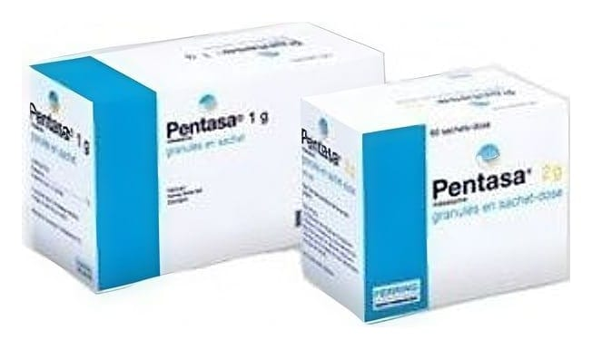

Pentasa 1 g Uzatılmış Salımlı Tablet ,150 Tablet

Ne için kullanılır
KT · Bölüm 1PENTASA, bağırsak iltihabını giderici etkiye sahip ilaçlar grubundandır.
PENTASA, uzatılmış salımlı tablet formunda üretilmektedir. Tabletler beyazımsı gri ile soluk kahverengi arasında, benekli, oval biçimdedir. Her iki yüzünde PENTASA baskısı bulunmaktadır.
Tabletler her biri 10 tablet içeren 6 tane veya 15 tane çift katlı alüminyum folyo blisterlerde, kullanma talimatı ile birlikte karton kutuda sunulmaktadır. Her bir kutuda 60 tablet veya 150 tablet bulunur. Tüm paket büyüklükleri satılmayabilir.
PENTASA, ülseratif kolit ve Crohn hastalığı tedavisi için kullanılır. Bu hastalıklar iltihabi özellikte bağırsak hastalıklarıdır. Etkisini kan dolaşımına geçerek değil, sadece bağırsaklarda bölgesel olarak gösterdiği bulunmuştur. Bu ilacı kullanmaya başlamadan önce bu KULLANMA TALİMATINI dikkatlice okuyunuz, çünkü sizin için önemli bilgiler içermektedir.
Bu kullanma talimatını saklayınız. Daha sonra tekrar okumaya ihtiyaç duyabilirsiniz. Eğer ilave sorularınız olursa, lütfen doktorunuza veya eczacınıza danışınız. Bu ilaç kişisel olarak sizin için reçete edilmiştir, başkalarına vermeyiniz. Bu ilacın kullanımı sırasında, doktora veya hastaneye gittiğinizde bu ilacı kullandığınızı söyleyiniz. Bu talimata aynen uyunuz. İlaç hakkında size önerilen dozun dışında yüksek veya düşük doz kullanmayınız.